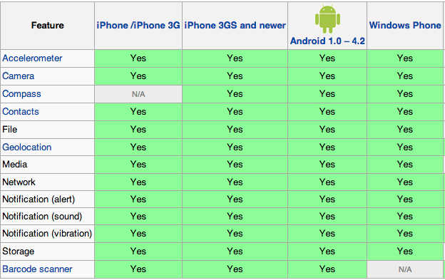

Writing Mobile Apps for iOS, Android, and Windows Phone Simultaneously with PhoneGap
whoami?
Bryan Hales
@bryanhales
First introduction to programming was in Boy Scouts at age 11.
My dad taught a “Computers” merit badge class and I was hooked.
I've been writing code for the past 20ish years, and particularly love building web apps.
PhoneGap...
"PhoneGap, [is] a cross-platform framework for device-neutral mobile development"
Is a mobile framework that allows you to invoke native functionality via javascript
Allows you to write “native” apps for various platforms simultaneously using only HTML, CSS, and JS
Is open-source, actively maintained, and has a huge developer community (400,000+)
Helpful History
Created by Nitobi at an iPhoneDevCamp event in San Francisco in 2009.
Bought by Adobe in 2011.
Adobe then contributed the PhoneGap code to The Apache Foundation.
Apache renamed their version of it to “Apache Callback”, and then later to “Cordova”
Cordova is the open source version of PhoneGap, but they are roughly the same.
How PhoneGap works:
The app is nothing but a full-screen web view.
You tell the web view what HTML page of yours to show first.
From that point on, it can run as a regular HTML/CSS/JS web application
The web view listens for and responds to JS calls.
When should you use PhoneGap?
When you need to write the same app for multiple devices, and don’t want to maintain 3 or 4 different code-bases*
* except for plugins
When you are more comfortable with HTML/CSS/JS than Objective-C or Java
When you want your app to be able to be used on the web, as well as various devices
When should you not use PhoneGap?
When top (native) performance is a must
If you're not comfortable with HTML/CSS/JS
If you're only worried about one type of device (maybe)
What can you do with PhoneGap using only Javascript?
Use/track the accelerometer
Take pictures with the camera or pick from their photo gallery
Capture audio, images, or video
Get compass data
Get notifications about connectivity (online, offline, wifi vs 3G, etc)
Have access to contacts read and write
Get information about the device that is running your app (UUID, version, model, etc)
Receive events about when your app is started, resumed, closed, etc
Receive events about incoming calls, messages, battery events, volume changes, etc
Read from the file system
Get geolocation information
Work with globalization
Send notifications (sounds, vibrations, alerts, etc)
Read/write to WebSQL (or SQLite) databases
Anything else you want to create (plugins are easy to write!)
Things to keep in mind:
All internal URLs (to css, js, fonts, images, etc) must be relative.
An absolute URL is equivalent to the root of the device’s filesystem (e.g. /foo/bar.jpg means file:///foo/bar.jpg, instead of the path to your app’s files)
The simulator is only a simulator. Test everything on the device early and often.
Debugging is not as easy as in a browser.
If you want to develop for iPhone, you do need a Mac*
* Well, not necessarily. Check out PhoneGap Build.
The iPhone and Android mobile browsers are like Chrome and Firefox. They are very similar, but there are some differences that will affect your CSS and JS performance.
Windows Phone is like IE10 (general support for CSS3 and HTML5)
Animations can be choppy unless you invoke the GPU. By default, jquery animations do not. CSS3 3D transforms do.
Just because something is choppy or sluggish in PhoneGap at first doesn’t mean you should give up.
Generally, with a little optimization, you can get it to look/feel just like a native app.
Available features are mostly the same across devices

Getting Started is easy:
http://docs.phonegap.com is an awesome resource
Download and install the SDKs for the platforms you want to use (Android, iOS, Windows Phone, etc)
Download and install (unzip) Cordova
Create a project for each platform you want to build for
Questions?
github.com/bryanhales
@bryanhales
bryanhales@gmail.com